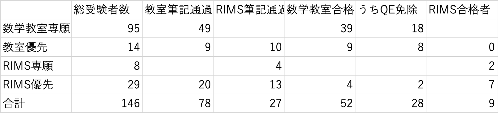

1. はじめに
この記事は前編 試験当日までの続きである．この記事の続きは後編 東大入試．
数学教室の試験は筆記が8/18(火)，筆記合格発表が19(水)にあり，合格者は20(木)〜22(土)のいずれかに口述試験をすることになる．口述試験の日程がいつになるかは分からないが，他大学の院試など事情がある場合にはその旨を事前アンケートに回答することで配慮した日程にしてもらうことができる．
私は東京在住なので，京都に宿を取る必要があった．口述試験次第で宿泊日程が変わるのだが，アンケートに書くほどの事情であるとは思わなかったのと，アンケートを締め切り後にメールで急かされて書いたために多少の申し訳なさがあったので，希望なしで出すことにした．宿は17(月)〜21(金)の4泊5日を取り，もし口述試験が22になったなら追加で取ろうと考えていた．周りには3泊4日の最低限しか取らず必要に応じて延泊するつもりだった人もいれば，最長の場合を考慮して5泊6日で取っていた人もいる．その点自分は中途半端であった．
宿はホテル平安の宿というところを取った．なぜかここに泊まるという同期が他に3人もいて，それならばもし不都合があっても対応できるだろうと思って決めた．1人での宿泊でもツインになったのだが素泊まりで1泊あたり1万円を切り，そんなに高額ではなかった（大浴場が工事中であったのが影響しているのかもしれない）．もし同期で同じ部屋に泊まることにしていれば宿泊費を減らせたと思うが，自分は直前に他人と会話がしたい一方で一人の時間も確保したいタイプだったので，同じホテルの別の部屋というのはちょうどよかった．
2. 筆記試験
試験当日，ホテルから宿は少し離れていたのでタクシーを取った．4人で相乗りしたのでワンコイン程度で済んだ．会場で受付をしてから教室に向かう．教室の前には座席表が貼ってあり，受験人数がわかった（詳しくは4. 結果，データ）．教室は一つのみであり，受験番号順に並んでいた．
まず基礎問題が始まる．
3. 口頭試問
あああ
4. 結果，データ
- 合否：QE免除なし合格
- 開示：分かり次第追記
- 受験者数など
